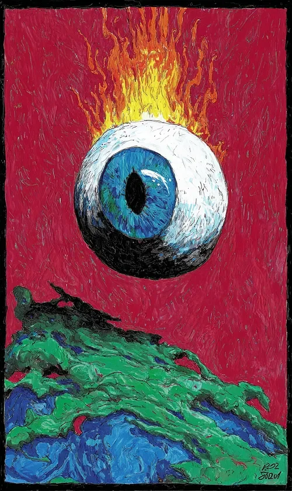

베인은 금이 간 안경을 고쳐 쓰고, 머리 위 천체의 각막이 남은 숲 위로 뜨겁고 진득한 안구액을 한 방울씩 흘리기 시작하자 눈을 가늘게 떴다.
[Vane adjusted his cracked spectacles, squinting as the celestial cornea above them began to weep a slow, searing trail of ocular fluid onto the remaining forests.]
"새로 만든 행성 렌즈의 배율이 좀 과하다고 말했잖아." 슬론이 세계만한 크기의 홍채에서 뿜어져 나오는 빛으로부터 얼굴을 가리며 한마디 했다.
["I told you the magnification on the new planetary lens was a bit aggressive," Sloane remarked, shielding his face from the glow of the world-sized iris.]
그 존재가 눈을 깜빡였고, 그 짧은 어둠의 순간 속에서 두 남자는 마침내 유난히 성가신 먼지 한 톨이 된 기분이 어떤 것인지 이해하게 되었다.
[The entity blinked, and in that brief moment of darkness, the two men finally understood what it felt like to be a particularly bothersome speck of dust.]